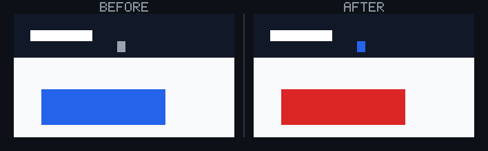
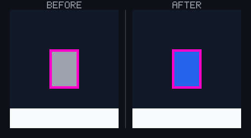
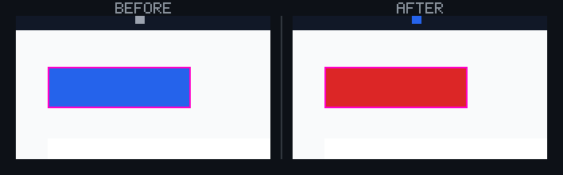
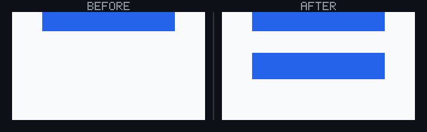
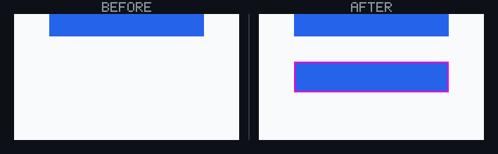
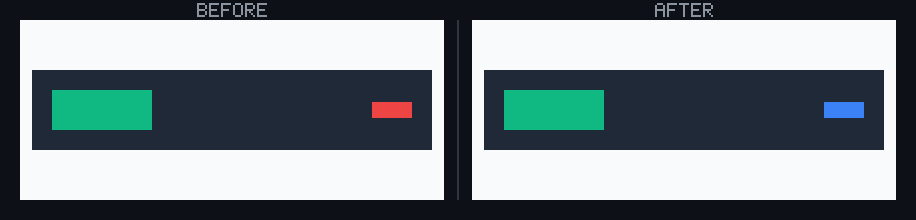
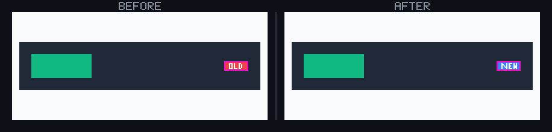
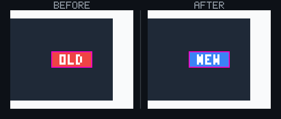
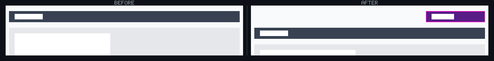

🗺️ StyleProof report
⚠️ Product-state comparison — unproven on 3 undeclared legacy pair(s). Legacy compatibility preserves the existing visual-review path, but this is not proof that both captures reached the same product state.
🆕 1 new surface(s) captured with no baseline to compare: pricing @ 900. These are reviewable first-adoption surfaces; approve them before they become the baseline.
3 computed-style difference(s) across 1 distinct change(s) in 1 changed surface base with an existing baseline. Surface base = one product UI state; capture keys with @width or live-state/popup variants are width or state captures of that base.
📝 3 advisory content change(s) below — they don't affect the check.
One-sided pages, states, or surfaces — review first
pricing@900 · new surface
pricing @ 900
after · pricing @ 900No baseline to compare against. This is a reviewable first-adoption surface; approve it before it becomes part of the baseline.
Element-level changes
span.caret · 1 element restyled
home @ 900
color #9ca3af → #2563eb

◀ before · after ▶ — home @ 900 🔍 magenta boxes mark each change — changed: `span.caret`
🔬 magnified 5× — change too small to see at 1:1 — changed: `span.caret`span.caret— text gray (#9ca3af) → blue (#2563eb)
Show the property change
span.caret
Style:
| Property | Before | After |
|---|---|---|
color | #9ca3af | #2563eb |
button.cta · 1 element restyled
home @ 900
background-color #2563eb → #dc2626

🔍 magenta boxes mark each change — changed: `button.cta`button.cta— background blue (#2563eb) → red (#dc2626)
Show the property change
button.cta
Style:
| Property | Before | After |
|---|---|---|
background-color | #2563eb | #dc2626 |
aside.off-canvas-status · 1 element restyled
home @ 900
opacity 0.85 → 1
The changed element is not visible in the captured page (it is outside the screenshot canvas, hidden at this breakpoint, or background content behind an active modal), so a before/after crop would be misleading.
aside.off-canvas-status— opacity 0.85 → 1
Show the property change
aside.off-canvas-status
Style:
| Property | Before | After |
|---|---|---|
opacity | 0.85 | 1 |
📝 Content and structure changes (advisory)
3 content/structure change(s). Advisory only — content and DOM structure are not part of the computed-style certification and do not affect the check. Surfaced so copy, element, and reflow changes are visible when content comparison is enabled. Live/age/clock text (relative ages, clocks) is labeled below so it cannot be mistaken for a product style regression.
duplicate-insertion@900 · 1 content/structure change(s)
button.duplicate-control
- element added

◀ before · after ▶ — duplicate-insertion@900
🔍 magenta boxes mark the changed contenthome@900 · 1 content/structure change(s)
span.content-label
- before:
Old - after:
New

◀ before · after ▶ — home@900
🔍 magenta boxes mark the changed content
🔬 magnified 2×: content change too small to read at 1:1sibling-insertion@900 · 1 content/structure change(s)
div.scope-switch
- element added

🔍 magenta boxes mark the changed content